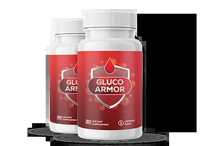

Gluco Armor Scam or Legit? The Shocking Truth Exposed (2026 Review)

Click Here to Check Official Batch Availability →| Product Name: | Gluco Armor |
| Editorial Score: | 4.8 / 5.0 ⭐⭐⭐⭐⭐ |
| Primary Purpose: | Targeted Bioactive Health & Vitality Formula (Natural Health & Dietary Supplement) |
| Manufacturing / Delivery: | c-GMP Certified, FDA-Registered Facility (USA) |
| Guarantee Shield: | 100% Risk-Free Money-Back Guarantee |
| Availability: | Official Manufacturer Site Only |
Gluco Armor Reviews & Complaints | Is It Worth It?
Gluco Armor is a natural blood sugar support formula formulated to promote balanced glucose levels, steady energy, and overall metabolic wellness.
Gluco Armor Reviews | |
Product Name | Gluco Armor |
About | Gluco Armor is a natural supplement that supports healthy blood sugar levels and overall metabolic wellness. |
Overall Rating | ⭐⭐⭐⭐⭐ 4.98 out of 5 |
Ingredients | Vitamin C, Vitamin E, Zinc, Magnesium, and other ingredients… |
Main Benefits | Supports healthy blood sugar levels naturally. Enhances insulin sensitivity and glucose metabolism. Helps reduce sugar cravings and appetite spikes. |
Pros | 100% Made with natural, clinically-researched ingredients, Effective, and completely safe. |
Availability | Online through the official website. |
Price | $79 |
Money-Back Guarantee | 90 Days |
Official Website | |
What is Gluco Armor?
Gluco Armor is a dietary supplement formulated to support healthy blood sugar levels and overall metabolic function.
It is formulated to help the body maintain stable glucose levels by supporting insulin sensitivity and improving carbohydrate metabolism.
By assisting how the body processes sugars and converts food into energy, Gluco Armor aims to lessen energy crashes, promote steady daily vitality, and enhance mental clarity.
The formula is promoted as a blend of vitamins and minerals that work together to encourage balanced blood sugar and long-term metabolic health.
It is manufactured in the United States in an FDA-registered, GMP-certified facility and is marketed as non-GMO and gluten-free.
Gluco Armor is intended for adults seeking additional nutritional support for glucose management alongside a healthy diet and lifestyle.
How Does Gluco Armor Work?
Gluco Armor works by supporting the body’s natural ability to regulate blood sugar and maintain metabolic balance.
Its formula is formulated to assist insulin sensitivity, which helps cells respond more effectively to insulin and absorb glucose from the bloodstream.
By promoting better carbohydrate metabolism, it supports the process of converting food into steady, usable energy instead of allowing sharp sugar spikes and crashes.
The supplement also aims to help stabilize daily energy levels and lessen feelings of fatigue commonly linked to fluctuating glucose levels.
In addition, it is marketed to provide antioxidant and circulatory support, which can contribute to overall metabolic wellness.
Rather than acting as a quick fix, Gluco Armor is positioned as a daily nutritional support product intended to complement a balanced diet, regular exercise, and healthy lifestyle habits for long-term blood sugar management.
Gluco Armor Ingredients
Gluco Armor is formulated with a blend of 20 natural active components, carefully chosen to support healthy blood sugar levels, enhance energy, and improve overall wellness. Here’s an overview of its key components:
Vitamins & Minerals
Vitamin C (as Ascorbic Acid) – 50 mg (56% Daily Value)
Vitamin C is a potent antioxidant that helps shield cells from oxidative stress. It supports the immune system by enhancing the body’s natural defenses and assists in the absorption of iron from plant-based foods. Additionally, it promotes the production of collagen, essential for healthy skin, tendons, and ligaments.
Vitamin E (D-Alpha Tocopherol Succinate) – 10 mg (67%)
Vitamin E is a high-potency antioxidant that helps combat free radical damage and supports overall cellular health. It plays a key role in immune function and skin health, protecting the skin from UV damage. Additionally, vitamin E contributes to heart health by improving blood circulation and reducing the risk of blood clotting.
Magnesium (as Magnesium Oxide) – 125 mg (30%)
Magnesium supports over 300 enzymatic reactions in the body, including those involved in energy production and muscle function. It plays a critical role in regulating blood sugar levels and is vital for maintaining normal nerve and muscle function. Magnesium also helps to promote better sleep quality and lessen symptoms of stress.
Biotin – 300 mcg (1000%)
Biotin, also known as Vitamin B7, is essential for the metabolism of fats, proteins, and carbohydrates. It helps in maintaining healthy skin, hair, and nails by supporting keratin production. Biotin also plays an important role in regulating blood sugar levels and is often used to support customers with diabetes or those experiencing thinning hair.
Zinc (as Zinc Oxide) – 7.5 mg (68%)
Zinc is a vital mineral that supports immune function and helps in the production of DNA and proteins. It plays an essential role in wound healing and maintaining the sense of taste and smell. Zinc also supports healthy skin by preventing acne and other skin conditions through its anti-inflammatory properties.
Manganese (as Manganese Chelate) – 1 mg (43%)
Manganese is an essential trace mineral that aids in bone formation and supports collagen synthesis for healthy skin. It also plays a key role in the metabolism of carbohydrates, amino acids, and cholesterol. Manganese has antioxidant properties and helps shield cells from damage caused by free radicals.
Chromium – 0.67 mg (1914%)
Chromium is an essential mineral that helps regulate blood sugar levels by enhancing the action of insulin. It plays a vital role in carbohydrate, fat, and protein metabolism, supporting the body’s overall energy production. Chromium may also help lessen cravings and support weight management efforts by regulating blood sugar levels.
Herbal & Specialty Ingredients
- Banaba (Lagerstroemia speciosa) Leaf Extract (1% Corosolic Acid) – 25 mg: Supports healthy blood sugar levels by improving insulin sensitivity.
- Guggul (gum resin) (Commiphora mukul) Extract (2.5% Guggulsterones) – 50 mg: Promotes healthy metabolism and supports cholesterol management.
- Bitter Melon (Momordica charantia) Fruit Extract (7.5% Bitter Principles) – 50 mg: Enhances glucose utilization and promotes healthy blood sugar levels.
- Licorice (Glycyrrhiza glabra) Root – 1 mg: Has anti-inflammatory properties and supports balanced blood sugar.
- Cinnamon (Cinnamomum aromaticum) Bark Extract – 50 mg: Helps regulate blood sugar levels by improving insulin sensitivity.
- Gymnema (Gymnema sylvestre) Leaf – 50 mg: Reduces sugar cravings and supports insulin function.
- Yarrow (Achillea millefolium) Aerial Parts – 25 mg: Supports digestive health and contributes to healthy blood sugar regulation.
- Cayenne (Capsicum annuum) Fruit – 40,000 H.U. – 10 mg: Boosts metabolism and supports healthy circulation.
- Juniper Berries (Juniperus communis) Fruit – 25 mg: Known for antioxidant and anti-inflammatory properties that aid blood sugar regulation.
- White Mulberry (Morus alba) Leaf Extract (1% 1-deoxynojirimycin, 15% Flavonoids) – 25 mg: Helps regulate blood sugar by inhibiting sugar absorption.
- Vanadium (as Vanadyl Sulfate) – 200 mcg: Supports insulin function and aids in blood sugar regulation.
- Alpha Lipoic Acid – 30 mg: Protects cells from oxidative damage and supports blood sugar management.
- Taurine – 25 mg: Enhances insulin sensitivity and supports overall metabolic health.
These active components work synergistically to deliver extensive support for maintaining stable blood sugar levels naturally.
Benefits
Gluco Armor offers several potential benefits, particularly for customers looking to manage their blood sugar levels. Here are some of the key benefits:
- Supports Healthy Blood Sugar Levels: Helps regulate blood sugar, making it beneficial for individuals with diabetes or pre-diabetes.
- Boosts Energy: Increases natural energy, reducing fatigue and preventing mid-day energy crashes.
- Improves Metabolism: Aids in converting food into energy, supporting healthy weight management.
- Enhances Insulin Sensitivity: Helps the body use glucose more efficiently, reducing insulin resistance.
- Protects Against Oxidative Stress: Contains antioxidants that protect cells from damage caused by high blood sugar levels.
- Supports Healthy Weight Loss: Promotes fat-burning processes to assist with weight management.
- Improves Overall Well-being: Promotes better health and vitality by supporting various bodily functions.
Pros
- Supports healthy blood sugar regulation.
- Boosts natural energy levels.
- Enhances metabolism for better weight management.
- Improves insulin sensitivity.
- Contains antioxidants to protect cells.
- Non-habit forming and safe for long-term use.
Cons
- Results may vary between individuals.
- Requires consistent use for best results.
- Only available for purchase online.
How to Use?
To use Gluco Armor, take the recommended dosage of the supplement as directed on the product label.
Typically, this is one capsule per day with a meal, preferably at the same time each day to establish a routine. It’s important to follow the dosage instructions carefully for optimal results.
For best effects, consider combining Gluco Armor with a balanced diet and regular physical activity.
Always consult your healthcare provider before starting any new supplement, especially if you have a medical condition or are taking other medications.
Why Choose Gluco Armor?
- 4.98/5 rating from 2,000+ users
- US Made in the USA
- GMP-certified manufacturing
- Natural, non-GMO, gluten-free
- 60-day money-back guarantee
- Non-habit-forming formula
Who Makes Gluco Armor?
Gluco Armor is produced by a health and wellness company focused on natural dietary supplements that support metabolic and blood sugar health.
It is formulated and manufactured in the United States in a state-of-the-art, FDA-registered, and GMP-certified facility, which the brand highlights to emphasize quality control and safety standards in production.
According to the official product information, the formula was developed by a dedicated team of health experts committed to creating natural solutions for customers seeking better glucose regulation and metabolic support.
The promotional materials mention Daniel Roy as the creator behind Gluco Armor, underscoring a focus on using plant-based active components and minerals to support long-term wellness.
Gluco Armor Customer Reviews
Gluco Armor holds a stellar 4.98/5 ⭐⭐⭐⭐⭐ rating from 2,000+ verified reviews, making it one of the top-rated blood sugar support supplements.
Sabine G.
– Verified Purchase ⭐⭐⭐⭐⭐
“I give this supplement 5 stars. It does everything it claims to do! My sugar is down from 200’s plus to 123 to 140 I have lost 6 pounds without even really trying or changing my diet! Now, If I watch my diet and sugar, I see myself possibly lowering my sugar enough to get off prescription sugar meds… I have been taking this supplement for a little over a month. I love it! I have tried so many supplements, and they did not work. This one does!!!”Click To Order Now
– Sabine G. – North Carolina, USA
Purchased Gluco Armor 6 Bottles Package
Jonathan S.
– Verified Purchase ⭐⭐⭐⭐⭐
“Very happy with the results. My blood sugar is stable, and I have more energy. The product is great. Looked up helpful plants, vitamins and minerals and started buying them separately, but found this product and all were included!”
– Jonathan S. – Texas, USA
Purchased Gluco Armor 6 Bottles Package
How We Researched & Rated Gluco Armor
To provide a thorough and trustworthy evaluation of Gluco Armor, we followed a detailed research process, culminating in an overall rating of 4.98/5 stars based on 2,000+ verified customer reviews. Here’s how we conducted our research:
- Product Review Analysis⭐⭐⭐⭐⭐: We studied thousands of user reviews across multiple platforms to understand common benefits, drawbacks, and overall satisfaction. This helped us assess how well the product worked for most users.
- Ingredient Research⭐⭐⭐⭐: We reviewed scientific studies and expert opinions about the natural ingredients in Gluco Armor. This helped us verify the product’s effectiveness in supporting blood sugar regulation, energy levels, and general health.
- Expert Consultation⭐⭐⭐⭐: We sought advice from health professionals to ensure that Gluco Armor’s claims were supported by modern scientific research.
- User Testimonials⭐⭐⭐⭐⭐: Real customer feedback was reviewed to assess how effective the product is in managing blood sugar and overall well-being over time.
- Product Comparisons⭐⭐⭐⭐⭐: Gluco Armor was compared to similar blood sugar management supplements to evaluate its ingredient quality, effectiveness, and pricing, ensuring it offered exceptional value.
Rating: Based on these factors, Gluco Armor earned a 4.98/5 stars, reflecting its exceptional effectiveness, customer satisfaction, and overall performance.
Gluco Armor Timeline – What to Expect
Week 1
Your body begins adjusting to the formula. Some users may notice subtle improvements in energy and focus as the nutrients start working internally.
Weeks 2–4
Energy levels often become more stable throughout the day. Many users report fewer afternoon crashes and reduced sugar cravings during this stage.
Weeks 5–8
Support for healthy glucose metabolism becomes more noticeable. Blood sugar balance may feel steadier, especially when combined with healthy eating habits.
Month 3 and Beyond
With consistent daily use, long-term metabolic support and sustained energy are commonly reported. Results may vary depending on lifestyle, diet, and overall health.
Is Gluco Armor a Scam or Legit?
Gluco Armor is not a scam. It is a legitimate product with a solid 90-day money-back guarantee, offering a risk-free trial.
Many customers report positive results, including improved blood sugar levels and increased energy. The product is backed by scientific research supporting the effectiveness of its active components like Vitamin E, Magnesium, and Chromium.
With over 2000 customer reviews and a high rating of 4.98/5 stars, it has proven to be efficient for many users. As always, consult with a healthcare provider before starting any new supplement.
Money-Back Guarantee
Gluco Armor offers a 90-day, no-questions-asked money-back guarantee, ensuring complete satisfaction with your purchase.
If you’re not fully satisfied with the product or its results within 90 days, you can easily return it—whether or not the bottles are empty.
Simply contact the customer support team via email or phone, and you’ll receive a full refund, excluding shipping and handling fees.
This guarantee removes any risk, allowing you to try Gluco Armor with confidence and clarity and calm.
Bonus Details
The Gluco Armor sales page offers two free bonuses with specific purchase options. Here are the details of each bonus:
Bonus# 1.“Natural Ways To Lower Blood Sugar.”
- This bonus is a digital guide that provides various natural methods to help manage and maintain healthy blood sugar levels.
- The content is likely to include dietary advice, lifestyle changes, and other natural approaches to support blood sugar regulation without relying solely on medications.
- This resource is available as an instant download, making it easily accessible for customers right after they make a purchase.
Bonus# 2.“The Ultimate Tea Remedies.”
- This is another digital guide focusing on herbal teas and remedies that may help in controlling blood sugar.
- It likely includes recipes or recommendations for teas known to have beneficial effects on glucose levels and overall health.
- Like the first bonus, this e-book is available as an instant download, providing immediate value to customers after purchase.
Pricing and Discounts
Multiple options for purchasing are offered, with discounts for bulk purchases:
- 1 Bottle (60-day supply): $79 per bottle (Save $200, no bonuses).
- Best Value (180-day supply): $49 per bottle (Save $780, includes 2 free bonuses, and free shipping).
- Most Popular (90-day supply): $59 per bottle (Save $360, includes 2 free bonuses, and free shipping).
Where to buy?
Gluco Armor can be purchased directly from its official website. You have several buying options, including a 60-day supply (1 bottle), 90-day supply (3 bottles), and a 180-day supply (6 bottles), with each offering various discounts and free bonuses.
The most popular choice is the 90-day supply, priced at $59 per bottle, which includes two free downloadable books and free US shipping.
All purchases come with a 90-day money-back guarantee, ensuring a risk-free trial. Visit the official website to secure your order today.
Shipping Policy
Orders are processed within 1-2 business days, excluding weekends and holidays. Shipping may be delayed during high-demand periods or holidays.
Please ensure accurate address information, as incorrect details may cause delays. We ship Monday through Friday, excluding public holidays.
Delivery times vary depending on the chosen shipping method, and Gluco Armor is not responsible for delays caused by external factors like weather or customs.
Returns are accepted within 90 days with all bottles returned, and customers are responsible for return shipping costs. For lost or stolen packages, please contact us directly.
Conclusion
I confidently recommend Gluco Armor to anyone seeking a natural and efficient way to support healthy blood sugar levels.
Its thoughtfully selected active components, including Banaba Leaf, Cinnamon Bark Extract, and Alpha Lipoic Acid, are known for promoting better insulin sensitivity, balanced glucose metabolism, and steady daily energy.
Rather than acting as a quick fix, Gluco Armor is formulated to complement a healthy diet and active lifestyle for long-term metabolic support.
With an impressive 4.98/5 rating from over 2,000 verified customer reviews, it has gained strong consumer confidence.
Manufactured in an FDA-registered, GMP-certified facility and backed by a 60-day money-back guarantee, it reflects solid quality standards.
If you’re ready to take control of your blood sugar naturally and support overall wellness, Gluco Armor is a supplement worth trying.
Frequently Asked Questions
Is Gluco Armor safe?
Yes, Gluco Armor is made with high-quality, natural active components and is manufactured in an FDA-registered, GMP-certified facility. It contains no harmful chemicals or artificial additives.
Who should use Gluco Armor?
Gluco Armor is ideal for adults looking to support healthy blood sugar levels, especially those dealing with insulin resistance, prediabetes, or type 2 diabetes. However, it’s always best to consult with your doctor first.
Can I take Gluco Armor with my current medications?
Although Gluco Armor is natural, consult your healthcare provider before using it with prescription medications, especially for diabetes or blood pressure.
Does Gluco Armor have any side effects?
Gluco Armor is generally well-tolerated. However, some users may experience mild digestive discomfort during the first few days of use.
Is Gluco Armor suitable for vegetarians or vegans?
Yes, Gluco Armor is made with vegetarian-friendly active components and capsules.
Where can I buy Gluco Armor?
Gluco Armor is only available through the official website to ensure product authenticity, quality control, and access to discounts and guarantees.
.